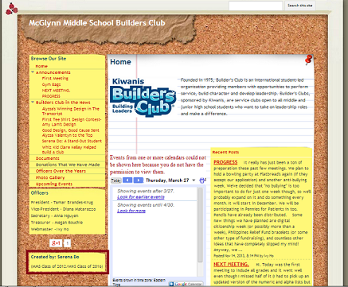
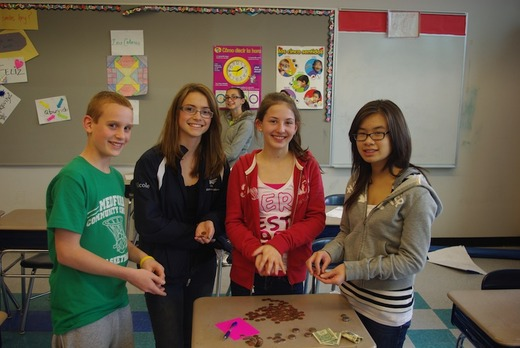

Cada organización necesita un buen gobierno para funcionar. En la escuela, los líderes tienen la responsabilidad para beneficiarse su población. Creo que soy el candidato mejor en esta elección para ustedes.
Tengo mucha experiencia con el liderazgo. Cuando era joven, yo era la secretaria y webmaster de un club de servicio social. Yo he hecho un sitio de web para mi club. Mi sitio había mostrado las actividades del club, y fue el razón lo era muy popular. Muchas estudiantes se presentaron, y cuando yo se gradué, el club tenía más de cincuenta miembros, donó más de un mil dólares a buenas causas y juntó fondos por la investigación del cáncer.

Alumnos buscan para un líder que sepa gobernar. Estoy esperando que ustedes tengan confianza en mí. Yo tengo muchos planes para los próximos años para mejorar nuestra escuela y garantizar su felicidad. Aunque la escuela tiene computadoras buenas, existe un gran potencial que nosotros no usamos. Quiero que desarrollemos las habilidades técnicas con programas y software que yo voy a buscar. Hay muchos recursos en la red para editar videos, fotos, y proyectos. También, espero que crezcamos espíritu escolar con prueba de los logros de clubes y equipos. El internet es una opción para demostrar nuestro orgullo de los mustangos. Yo tengo un amigo de otra escuela que forma parte de un “club de internet”. El hace y mantiene sitios y blogs para los estudiantes de su escuela. Con un club de internet, cada organización puede mostrar fotos y videos de sus actividades y premios. Obtenemos espíritu de nuestra escuela. Prometo que el club trabaje con los estudiantes para utilizar el internet—los estudiantes de Medford High son especiales; necesitamos una manera para mostrarlo.
Los pensamientos y el trabajo de una persona no son suficientes. Sugiero que nosotros colaboremos para resolver problemas de la escuela. A una reunión cada mes, el público puede compartir ideas y sugerencias a los líderes. Quiero que tenga una buena amistad entre el vicepresidente y las demás; mis reuniones públicas mensuales son un tiempo para hablar libremente y unirse.
Con mis amigas “Las Mejores Mujeres”, estamos esperando que la escuela tenga éxito. Mi sitio de web “bit.do/lasmejoresmujeres” tiene más información y maneras de contacto. Gracias para tu tiempo, y por favor voten por mí.
Todas las computadoras van a tener programas y software buenas. Hay muchos programas gratuitos o baratos en el internet (ejemplo: GIMP, Audacity, Notepad++, Google Chrome). Los estudiantes pueden usar las computadoras de la escuela para editar fotos, videos, y hacer proyectos por sus clases. El internet tiene muchos recursos para los estudiantes que nosotros no usamos ahora.
Tengo un amigo de una escuela differente citizens que tiene un club de internet. Los miembros crean, diseñan y mantienen sitios de web para para los profesores, clubes y equipos. Lo construye orgullo de la escuela. Podemos mostrar videos, fotos, y información en un sitio en vez de usando el boca a boca.
Necesito ayuda para gobernar una clase. Ojalá que tengamos la libertad de hablar y compartir ideas. Reuniones todos los meses de los oficiales y el público son importante para la escuela. Para funcionar bien, todos los cuidadanos en una escuela tienen colaborar en problemas grandes.